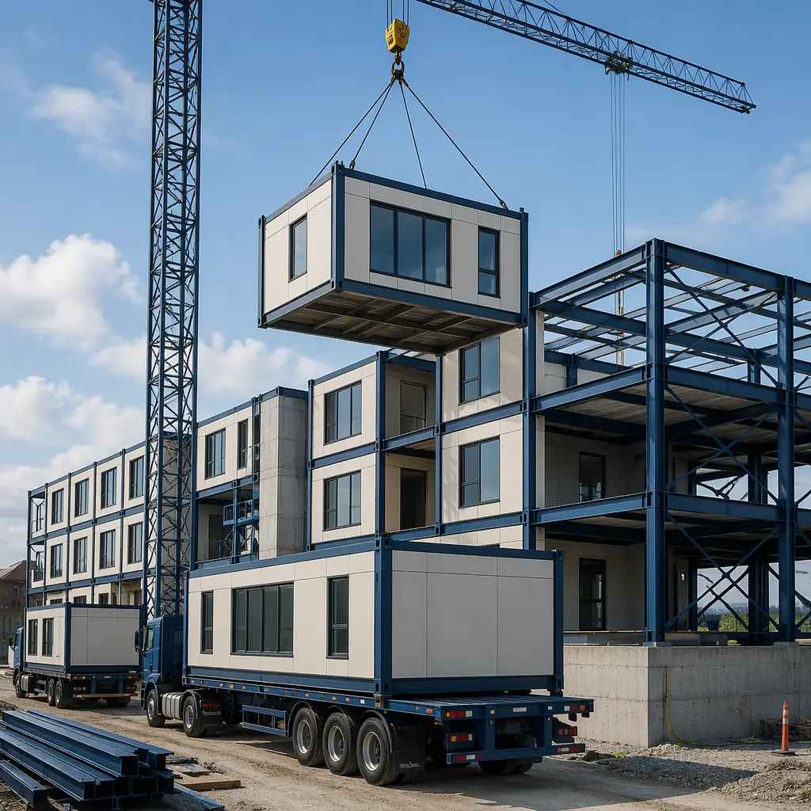
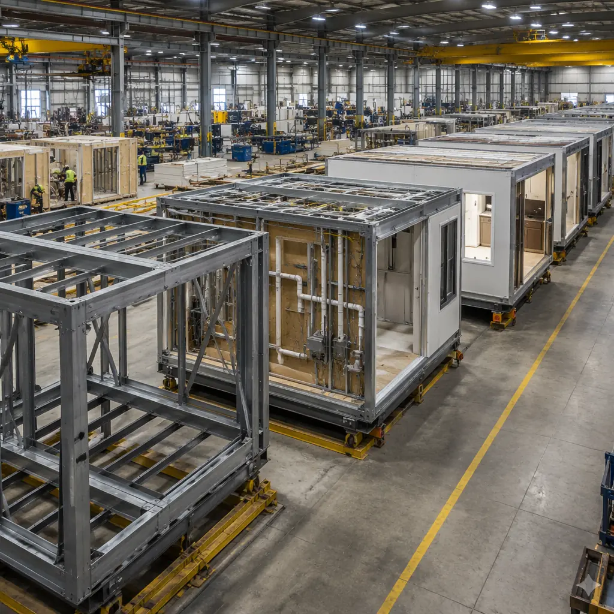
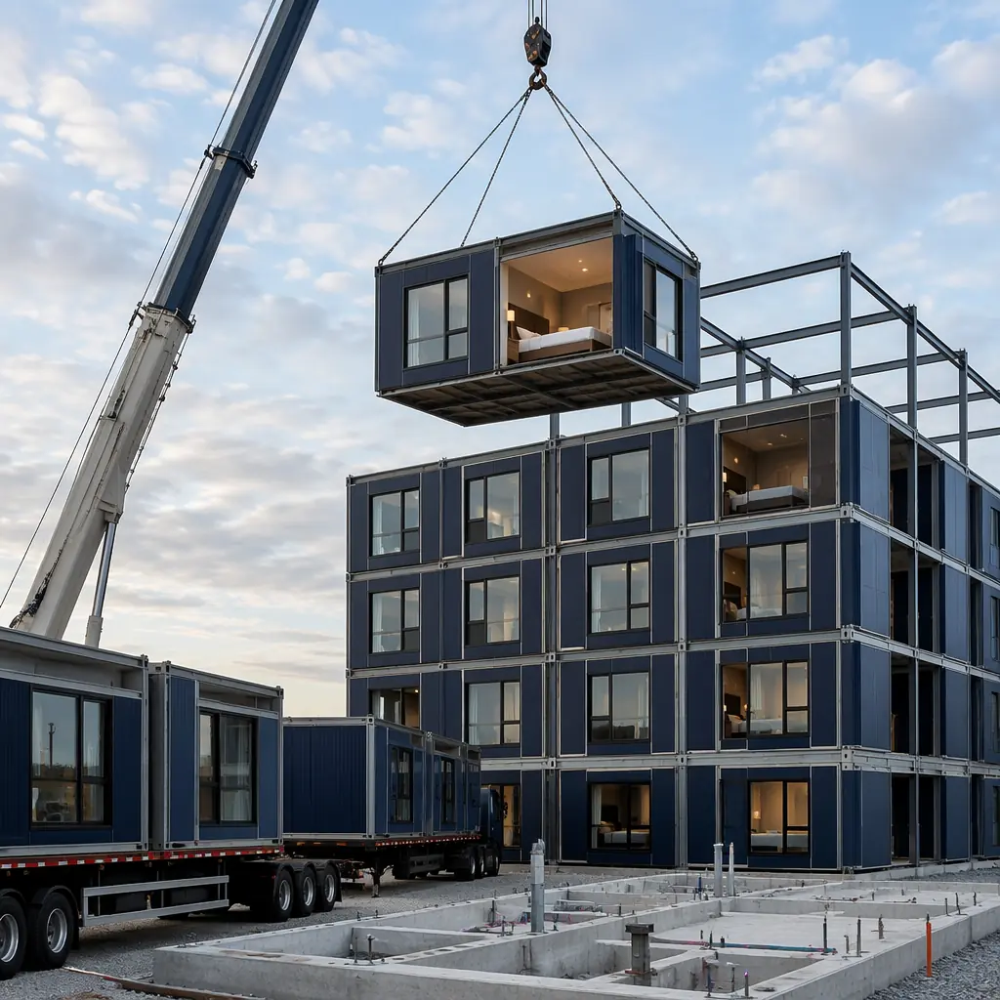

Time is the least forgiving line item in any commercial construction budget. Every month a building sits incomplete is a month of carrying costs, missed rent, and delayed revenue. For a 100-unit apartment building at $2,000/month average rent, every month of delay costs the developer $200,000 in lost income — before accounting for extended construction loan interest, general conditions, and overhead. This is where modular construction's most compelling advantage lives: not in lower cost per square foot (though it often achieves that too), but in dramatically compressing the timeline from contract to certificate of occupancy. This article maps out exactly what that timeline looks like, phase by phase, and where modular eliminates weeks and months from the traditional construction schedule.

The Parallel Production Principle: Why Modular Is Fundamentally Faster
Traditional construction is a linear process: you cannot start framing until the foundation cures, you cannot start MEP rough-in until framing passes inspection, you cannot hang drywall until the building is weathertight. Each trade waits for the previous trade to finish. Weather delays cascade. Subcontractor sequencing gaps compound. The critical path is a single thread with no parallel branches.
Modular construction splits the critical path into two parallel tracks. While the site crew excavates, pours foundations, and installs underground utilities, the factory crew is simultaneously fabricating modules — complete with structural framing, interior finishes, MEP systems, windows, doors, and fixtures. When modules arrive on site, they are 85–90% complete. The on-site work reduces to setting modules, connecting utilities at module joints, commissioning systems, and completing minimal finish work. This is not a theoretical advantage — it is the defining structural difference between modular and site-built construction timelines.
| Project Phase | Traditional (weeks) | Modular (weeks) | Time Saved |
|---|---|---|---|
| Design & engineering | 8–14 | 8–14 | — (same) |
| Permitting & approvals | 6–16 | 6–16 | — (same) |
| Site preparation & foundation | 4–8 | 4–8 | — (same) |
| Factory module production | — | 8–14 | Parallel |
| Building shell/framing | 10–20 | — | Eliminated |
| MEP rough-in & interior finishes | 12–18 | — | Eliminated |
| Module setting & connection | — | 2–4 | ~12 weeks saved |
| Site finishing & commissioning | 4–8 | 2–4 | 2+ weeks |
| Total (post-approvals) | 30–54 weeks | 14–26 weeks | 30–50% faster |
Note: Design and permitting timelines are identical for both methods. Modular's speed advantage kicks in after permits are issued, when factory production and site preparation run concurrently. For projects with complex zoning or permitting challenges, see our guide to modular construction permitting and zoning.

Phase 1: Design and Engineering (8–14 Weeks)
This phase is identical in duration for modular and traditional construction, but the deliverables differ significantly. In modular design, the architect and factory engineering team collaborate from day one on module dimensions, transport constraints, and connection detailing. Key design-phase activities unique to modular include: establishing the module grid (typically based on transport width limits of 3.5–4.5 meters and length limits of 12–16 meters per module), designing the module-to-module connection system for structural continuity and weathertightness, and coordinating MEP riser locations so that plumbing stacks, electrical conduits, and ductwork align at module joints.
This additional design coordination adds approximately 1–2 weeks to the engineering phase compared to a traditional project of similar complexity but eliminates weeks of RFIs and field coordination changes during construction. For a developer, the net effect is neutral on total timeline: you invest slightly more time in design to save substantially more time in construction. Our BIM and digital workflow guide covers how advanced modeling tools make this coordination efficient.
Phase 2: Permitting and Approvals (6–16 Weeks)
Modular projects require two permit tracks: the site permit (foundation, utilities, site work) and the factory permit (module fabrication, typically under a state industrial program or third-party inspection agency). The permit durations are comparable to traditional construction because the same building codes apply — IBC, local amendments, energy code, accessibility standards. The difference is that factory permitting can run in parallel with site permitting, and many modular manufacturers (including MODURA) maintain pre-approved module designs and standard connection details that accelerate plan review. For developers in jurisdictions with limited modular experience, engaging a permit expeditor familiar with off-site construction can compress this phase by 2–4 weeks.
Phase 3: The Overlap — Site Prep + Factory Production (8–14 Weeks)
This is where the modular timeline diverges from traditional and never looks back. While the site contractor excavates, forms and pours foundations, and installs underground utilities, the factory production line is simultaneously building complete modules. A MODURA factory with four production lines can produce 8–12 modules per day, meaning a 100-module apartment building is fabricated in 10–14 working days of factory time — not months.
Each module goes through a defined production sequence: steel frame welding and inspection, floor deck and subfloor installation, wall framing and sheathing, window and door installation, MEP rough-in (plumbing, electrical, HVAC ductwork, low-voltage), insulation and drywall, interior finishes (flooring, trim, paint, fixtures), and final quality inspection. By the time the foundation cures on site, the modules are complete, wrapped for transport, and staged in the factory yard awaiting shipment. For a deep dive into the factory quality systems that make this possible, see our factory QC systems analysis.

Phase 4: Module Setting and Connection (2–4 Weeks)
Module setting is the most visually dramatic phase of modular construction and the one that most clearly demonstrates the schedule compression. A crane sets 6–12 modules per day, depending on module size, crane capacity, and site logistics. A 100-module building is set in 8–16 working days. As each module is positioned, crews immediately connect structural ties, weather barriers at horizontal and vertical joints, and utility risers. Within 1–2 days of setting, a module stack is weathertight and energized — a milestone that takes 3–5 months to reach in traditional construction.
The site crew during this phase is small: a crane operator, rigging crew, and connection team of 6–10 workers. Compare this to a traditional construction site at the equivalent stage, which might have 30–50 workers from a dozen trades. The reduced site labor density lowers general conditions costs, site security requirements, and safety exposure. See our site safety analysis for how modular sites achieve significantly lower incident rates.
Phase 5: Finishing, Commissioning, and Occupancy (2–4 Weeks)
The final phase covers module-joint finish work (drywall taping at module seams, flooring transitions, ceiling grid tie-ins at module joints), MEP system commissioning (balancing HVAC, pressure-testing plumbing, verifying electrical), fire alarm and life safety testing, elevator inspection (if applicable), and final building department inspections for certificate of occupancy. Because 90% of finishes were completed and inspected in the factory, this phase is compressed to approximately half the duration of traditional construction finishing. For a detailed walkthrough of the commissioning and handover process, see our commissioning and handover guide.
Timeline by Building Type: What Developers Should Expect
While the phase durations above apply broadly, different building typologies have different timeline profiles. The numbers below are based on MODURA's project data across 500+ completed projects in 18 countries:
| Building Type | Size | Traditional | Modular | Time Saved |
|---|---|---|---|---|
| Hotel (limited service) | 80–120 keys | 14–18 months | 8–10 months | 40–45% |
| Apartment building | 60–100 units | 16–22 months | 9–13 months | 40–45% |
| Office building | 20–50k sqft | 12–16 months | 7–10 months | 35–40% |
| Student housing | 200–400 beds | 18–24 months | 10–14 months | 40–50% |
| Healthcare clinic | 10–30k sqft | 10–14 months | 6–9 months | 35–40% |
Hotels and multi-family residential see the largest time savings because they have the highest module repetition — 100 nearly identical hotel rooms fabricated in sequence is the ideal use case for factory production. Office and healthcare buildings have more module variation (different room sizes, different MEP requirements per zone) and therefore see slightly lower but still substantial time compression. For cost implications by building type, see our detailed cost breakdowns and our developer's ROI analysis.